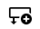
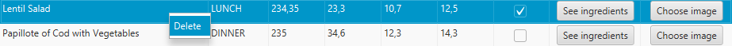
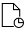
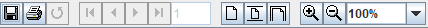

This window allows the management of the plates data. This includes creating a new plate, modifying it, deleting it and performing filtered searches. You can also generate a report with a resume of the plates data.
To create a plate, click on the add new row button. If no error occurs, an empty plate will be created ready to be modified.
To modify the data of a plate, double click on the corresponding cell, this will enable the edit mode. For the name and nutritional values, type the desired data and then press enter. To cancel you must press esc; the meal type cell displays a list with the different options; to indicate that a plate is vegetarian you will have to check the checkbox.To insert an image in a plate, click on the Choose image button. This will open a file selector, you must choose the image you want. If the modified field is correctly typed and no error occurs, the plate information will be modified.
To delete a plate, right click on the row of the one to be removed and select the Delete option that will appear on the screen. Once this is done, a confirmation window will appear: click Confirm to delete the dish or Cancel to cancel it. If it is confirmed and no error occurs, the plate will be removed.
You can search by name entering it in the search bar. You can also filter vegetarian plates,by the meal type they are and/or by the food type of the ingredients that a plate contains. To do this you will need to click on the Filters button and mark the checkbox if you want them to be vegetarian, choose the meal type and the food type the ingredients are in the corresponding lists. It is not necessary to enter all the fields, if any are left blank they will not be taken into account and if all the filters are left blank all the plates will be shown. If there are filters entered the search by name will only search among the filtered plates.
Clicking on the buttons in the side menu will open their corresponding management window.
Clicking the report button  will open a window where you can view a document containing a list of the plates that exist in the application. Using the buttons on the top of the window, you can print or save the report.
Clicking the help button will show this document.
Pressing the X a confirmation window will appear: click Confirm to close the app or Cancel to do nothing.
Pressing the Log Out button a confirmation window will appear: click Confirm to go back to the Sign In window or Cancel to do nothing.